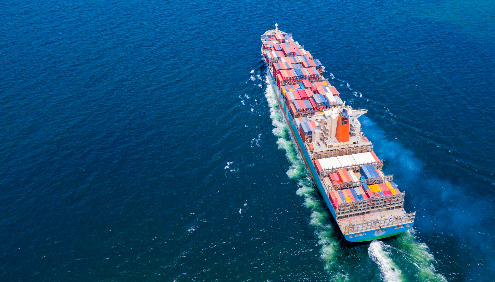

Independent expertise. Practical outcomes.
Solent Marine Consultants Ltd (SMC) is an independent maritime consultancy headquartered in Southampton, United Kingdom. We support shipowners, ship managers, P&I Clubs, insurers, charterers, ports, maritime training institutions, offshore companies and government organisations with reliable technical, operational and regulatory solutions.
Our experienced team combines practical seagoing knowledge with specialist consultancy expertise to deliver solutions that improve safety, enhance efficiency and ensure compliance.
What Defines SMC

Built on expertise, integrity & commitment
Solent Marine Consultants was founded with the vision of providing independent, reliable and commercially practical maritime consultancy services to a global client base. Over the years, we have built a strong reputation for technical excellence, professional integrity and client satisfaction across every service we deliver.
Today, our team continues to support the global maritime industry with the same values that define our journey – expertise, integrity and commitment.
Capability that travels worldwide
Looking for Professional Maritime Consultancy?
Whether you require marine surveys, inspections, audits, investigations or technical consultancy, our experienced maritime professionals are ready to assist. Contact Solent Marine Consultants today for expert advice and tailored solutions.